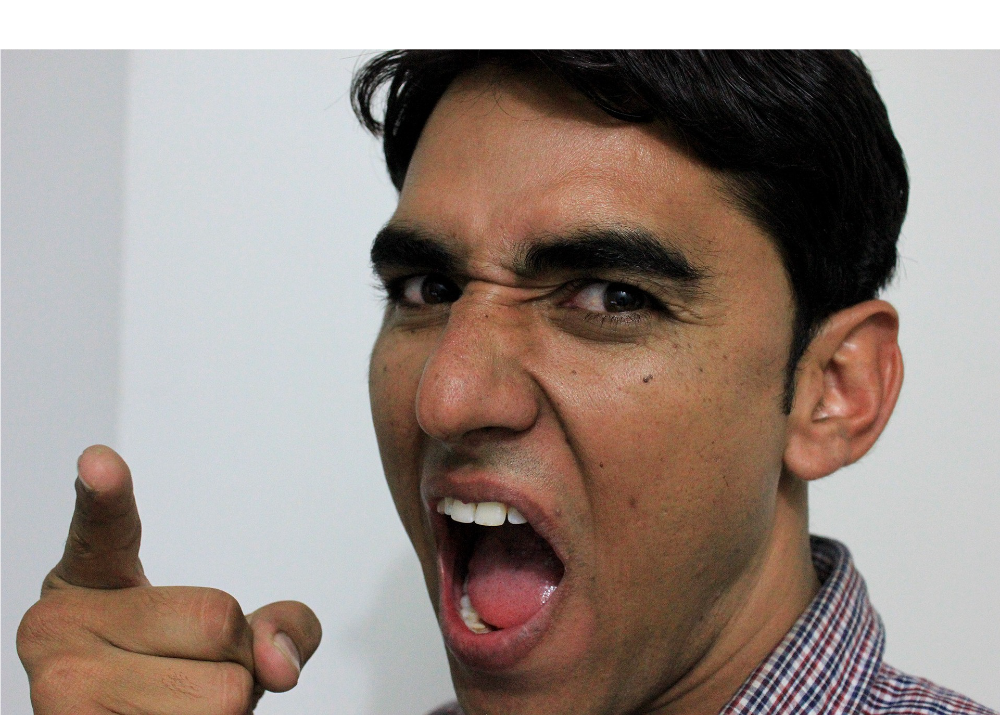
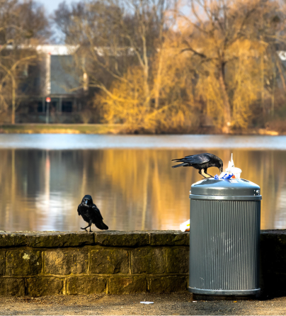
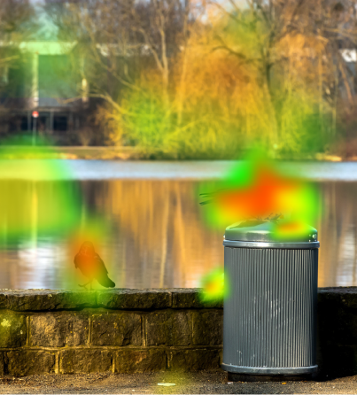
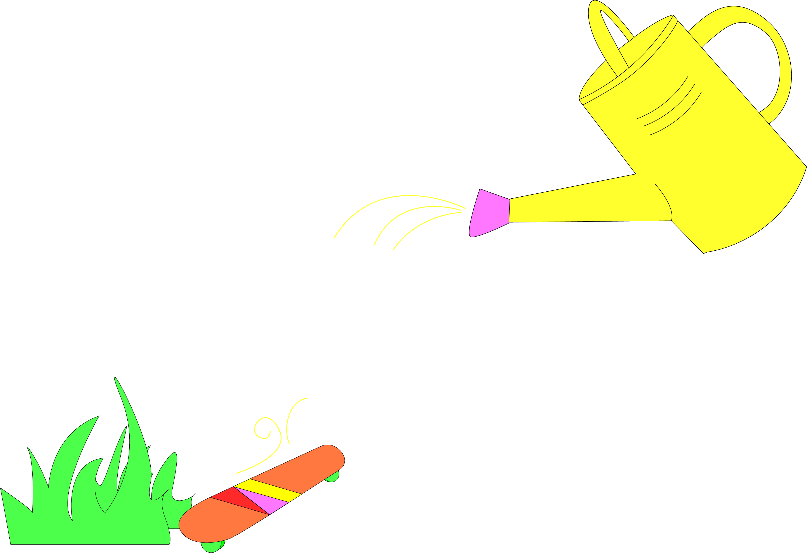
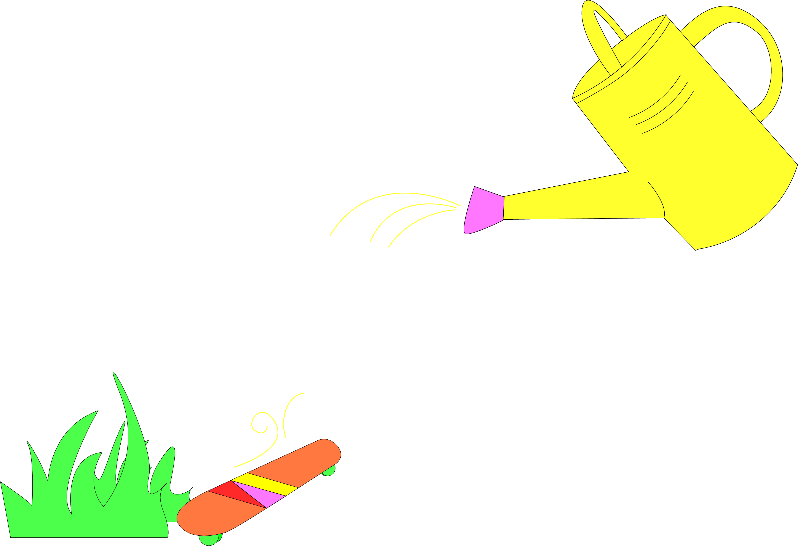

두려움, 분노, 성가심,
기분 나쁜 감정을
일으키는 이미지는
이제 그만,
작별 인사를 건네요.


조그만 실수도 용납지 않는 무서운
상사에게 깜찍한 머리핀을 달아줍니다.
획일화된 시야를 제공하던 안경은 잊어주세요. Focus own은 개인의 취향에 맞는 시야를 선물합니다. 보기 싫은 건 알아서 가려주고, 취향에 맞게 시야의 이미지를 재구성하죠. Focus own 으로 진짜 나의 ‘눈'을 경험해보세요.
두려움, 분노, 성가심,
기분 나쁜 감정을
일으키는 이미지는
이제 그만,
작별 인사를 건네요.
조그만 실수도 용납지 않는 무서운
상사에게 깜찍한 머리핀을 달아줍니다.
무서웠던 까마귀의 식사 장면을 귀엽게 바꿔봐요.
길거리에서 애정행각을 보이던 커플들은 지우고,
저녁 메뉴나 고민해보죠!
Operation Process
1
Capturing a Field of-View Image
2
Capturing a Field of-View Image
3
Send calibrated
Image
step1
step2
테에 부착된 적외선 센서가 시야 이미지를 볼 때의 안구 움직임을 감지합니다.
대상을 보았을 때 나타나는 눈의 변화를 토대로 어떤 대상을 보고 싶어 하는지,
어떤 것을 볼 때 눈을 피하는지 등을 파악해 시각적 이미지 선호도를 분석합니다.


step3
시각적 선호도에 맞춰 보정된 이미지를
OLED Micro display에서 도파관 형식으로 전달합니다.
선호도 (-): 까마귀, 쓰레기
선호도(+): 강물, 나무
스마트 안경이면, 기본은 더 확실하게

120°시야각 지원
120°의 넓은 시야각을 제공해 더 생생한 이미지를 전달합니다.
4K 해상도 지원
아이트래킹 기술을 활용하여 시선이 어디에 초점을 맞추고 있는지 분석합니다. 그에 맞게 선명도를 조절하여 4k의 높은 해상도를 지원합니다.
12~50%의 광효율
12~50%의 광효율로 높은 전력 소비 수준을 가지고 있습니다. 100% 충전시 3시간 지속 사용 가능합니다.
안경프레임 색상부터 렌즈 색상까지 원하는 대로 커스터마이징 할 수 있습니다. 맞춤 제작하시는 경우, 주문일로부터 2주 이상 소요됩니다.
안경테에 원하는 이니셜을 각인할 수 있습니다. 기입하시는 이니셜 앞에 Focus on 이 함께 기재되는 점 참고바랍니다.

 
